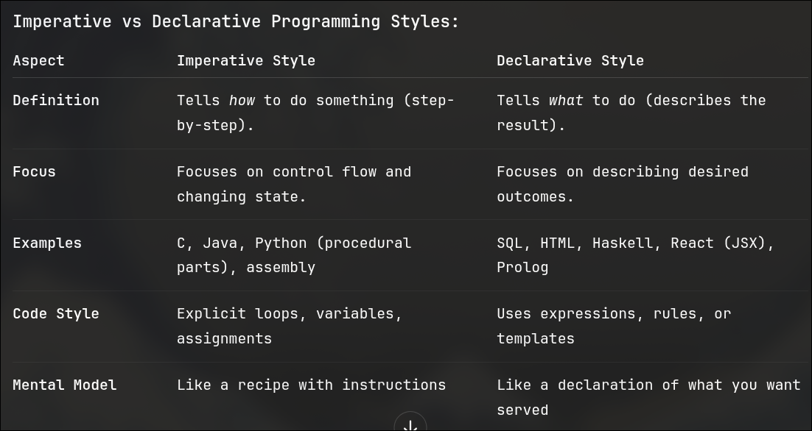

Intro JS
Web Dev history
- 1990 [Tim Berners-Lee]
- HTML
- 1994
- CSS
- 1995
- JS
- 2000
- AJAX + ES 3 [===]
- 2003
- JSON
- 2006
- JQuery
- 2010
- Angular-JS
- 2013
- React-JS
- 2014
- Vue
- 2016
- Angular-2
- 2017
- Web-Assemble
- 2019
- Svelte
React-Hooks
- 2020
- Vue-Composition
Solid-JS
HTMX
- 2021
- React-suspense
- 2023
- Swelte-Runes
- 2024
- J-query is still used in 75% of the websites
Sauce for history
Javascript Only content
- 1995
- Brendan Eich - Mocha [ 10 days ] undre Netscape
- Sept-1995
- Renamed to livescript
- Dec-1995
- Renamed to JS - sounded fitting
- June-1997
- ECMAscript
- Dec-1999
- ES3[===]
- 2000
- ES-4 in the direction of typescript
- 2003
- Douglas crockford - JSON
- Douglas scrutinised ES4 and MS seconded that and ES-4 was used as
action-script in Flash
- 2006
- JQuery
- Very first library with very good documentation
- Sept-2008
- Chrome + V8
- May-2009
- Node-JS [ server time - runtime for JS
Event-drive non blocking code]
- Dec-2009
- ES3.1 == ES5 [ after 10 years of last technical attention ]
- Imperative vs Declarative
-

- 2000
- Angular-JS and BackBone
- Most github stars [ keeps chaning - rn vue has the most github stars ]
- React [JSX]
- Most popular [ downloads ]
- Most github stars
- Vue
- 2nd Most github stars
- Swelte
- Most loved on stackoverflow
- June-2015
- ES-6
Promises
Error functions
Destruction
Not supported in many legacy browser
- 2015
- React-JS
Amazing Sauce To learn JS
Basics